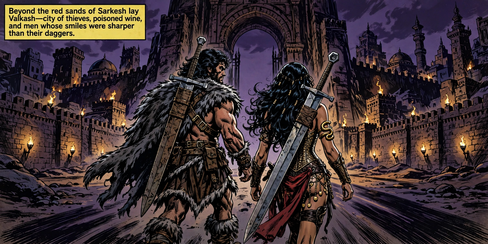

Panel 01
Act I: City of Shadows
Gates of Valkash
korvath, natari

🔍 Click to inspect (Full 2K)
📜 Narrative Caption
"Beyond the red sands of Sarkesh lay Valkash—city of thieves, poisoned wine, and men whose smiles were sharper than their daggers."
Action: Wide panoramic establishing shot. Korvath and Natari approach the colossal archway gates of Valkash, the City of Shadows. Torches flicker along high crenelated walls, while ancient minarets and domed palaces rise into a bruised purple twilight sky. Korvath's massive two-handed straight iron broadsword is strapped in a weathered leather sheath vertically across his broad muscular back, featuring a simple straight dark wire-wrapped handle, plain rectangular iron crossguard, and unadorned solid iron octagonal pommel visible over his shoulder. Strictly NO jewels or gems on sword, NO curved handle, NO bizarre loops.